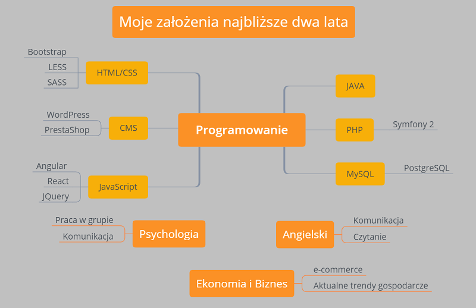

Moja krótka historia
Jako dziecko i nastolatek, moje życie kręciło się wokół piłki nożnej. Uwielbiałem to uczucie dążenia do celu, wygrywania i ciągłej pracy nad sobą. Sport ukształtował mnie i jestem z tego bardzo zadowolony. Gdy uzyskałem pełnoletniość, postanowiłem uczyć się ekonomii i zarządzania. Byłem wyróżniającym się studentem. Dzięki temu jeszcze w trakcie nauki pracowałem jako specjalista ds. rozwoju miast. Praca ta jednak w pewnym momencie nie dawała mi już satysfakcji. Postanowiłem wiec znaleźć lepszą przestrzeń dla siebie.
Chociaż to nie było proste, postanowiłem zrezygnować z pracy i skupić się na przekwalifikowaniu. Opracowałem swój własny plan rozwoju, który skoncentrował się wokół programowania. Obrany kierunek został poparty kilkoma wskazówkami. Moje predyspozycje, cechy charakteru, sposób pracy, nabyte nawyki doskonale pasuję do charakterystyki pracy programisty. Analzując rynek pracy, najwięcej ofert jest z dziedziny programowania, a sama dziedzina jest idealnym miejscem do wykorzystywania swojej kreatywności i inicjatywy. To wszystko spowodowało, że podjęta decyzja nie była tylko efektem "owczego pędu", a pierwszą, dokłądnie przemyślaną, decyzją związaną z rozwojem kariery zawodowej.
To co charakteryzuje mnie, jako osobę, to chyba determinacja, wizjonerstwo, chęć nauki i rozwoju, szukanie odpowiedzi na trudne pytania. Staram się codziennie czytać wartościowe książki. Fascynuje mnie niemal każda dziedzina naukowa, ale w szczególności psychologia, ekonomia, filozofia.
Moją pierwszą pasją, jak już wspomniałem jest piłka nożna. Dlatego od jakiegoś czasu, w godzinach popołudniowych (po 17:00) pracuje jako dziecięcy trener piłki nożnej. Wykorzystując inne swoje zainteresowania, pracuje nad takimi projektami jak: portal zwiazany z gospodarką lokalną oraz portalem związanym z sztuką przekwalifikowania. W końcu proces ten dokładnie teraz poznałem i chciałbym podzielić się tą wiedzą z innymi, być może komuś będę wstanie pomóc.
Moje umiejętności
HTML
CSS
JavaScript
PHP
JAVA
MySQL
PROCES MOJEJ NAUKI
Możesz poznać proces mojej nauki klikając na dowolny powyższy przycisk. Ta dynamiczna zmiana treści została opracowana za pomocą JavaScript. Miłej lektury.
Jeśli chcesz poznać moje portfolio na GitHubie kliknij na przycisk -->>
Moja wizja
Każdy z nas posiada jakieś plany. Ja nazywam je wizją przyszłości. Być może nazwa ta budzi kontrowersje. Moim zdaniem jednak świetnie odpowiada na takie pytania jak:
Kim jesteśmy?
Dokąd zmierzamy?
Co jest naszym drogowskazem?
Staram się również trzymać tych zasad:
Ucz się z przeszłości.
Planuj przyszłość.
Żyj teraźniejszością.
Poniszy rysunek przedstawia w postaci graficznej moje założenia na najbliższe dwa lata. Oprócz nauki różnych technologii webowych, chcę rozwijać swoje umiejętności interpersonalne, w tym szczególności sposób komunikacji i pracy w grupie. Oprócz tego, zależy mi na pogłębianu dotychczaswoej wiedzy z dziedziny ekonomii i biznesu, po to, aby móc lepiej dostosowywać rozwiązania do aktualnych potrzeb czy trendów oraz starać się dostrzegać nowe możliwości, które dają przewagę konukrecyjną potencjalnym partnerom biznesowym.
Moje projekty
To w krótce zostanie rozbudowane